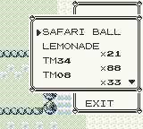

Safari Ball (glitch item)
From Glitch City Wiki
Jump to navigationJump to search(↑ Back to the ItemDex index.)
| Bulbapedia also has an article about Safari Ball (glitch item). |
| Name (transcribed): Safari Ball  Identifier (HEX): 08 Identifier (DEC): 008 Effect pointer: Unknown Unterminated name glitch item?: No Tossable/Sellable?: No Buy Price: 1000 Sell Price: N/A Name bytes: {{{9}}}
|
Safari Balls (Japanese: サファリボール) are a special type of Poké Ball in the Pokémon games used in the Safari Zone and Great Marsh.
Despite being used in the Safari Zone and Great Marsh, it is usually unavailable as an inventory item in the main series. It uses a multiplier of 1.5x in the catch rate calculation.
In Pokémon Red, Blue, and Yellow, the amount of Safari Balls held is not shown in the inventory, however using a Safari Ball will still decrease the number of Safari Balls held (as expected, regardless of whether the capture was successful or not).
Safari Balls do not exist as inventory items in Pokémon Gold, Silver and Crystal.
Item descriptions
- Pokémon Stadium: A Ball used in the Safari Zone for catching wild Pokémon.
- Pokémon Ruby/Sapphire/Emerald: A special Ball that is used only in the Safari Zone.
- Pokémon FireRed/LeafGreen: A special Ball that is used only in the Safari Zone. It is finished with a camouflage pattern.
- Pokémon Colosseum, Pokémon XD: A special Ball that is used only in the Safari Zone.
- Pokémon Diamond/Pearl/Platinum, Pokémon HeartGold/SoulSilver: A special Poké Ball that is used only in the Great Marsh. It is decorated in a camouflage pattern.
- Pokémon Black/White, Pokémon Black 2/White 2: A special Poké Ball that is used only in the Great Marsh. It is decorated in a camouflage pattern.
- Pokémon X/Y, Pokémon Omega Ruby/Alpha Sapphire: A special Poké Ball that is used only in the Great Marsh. It is recognizable by the camouflage pattern decorating it.
- Pokémon Sun/Moon: A special Poké Ball that is used only in the Great Marsh. It is recognizable by the camouflage pattern decorating it.